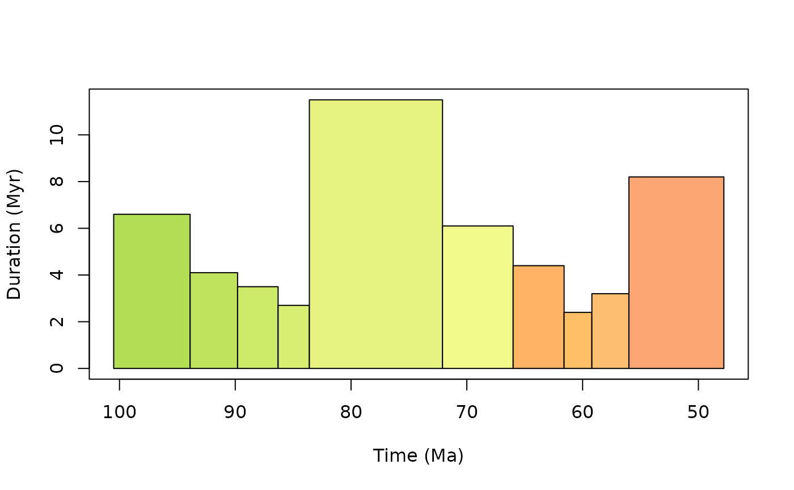
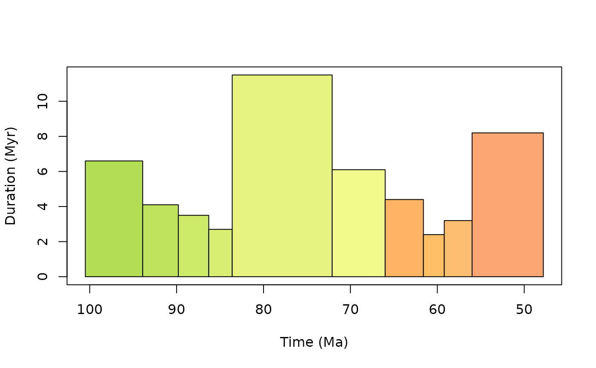
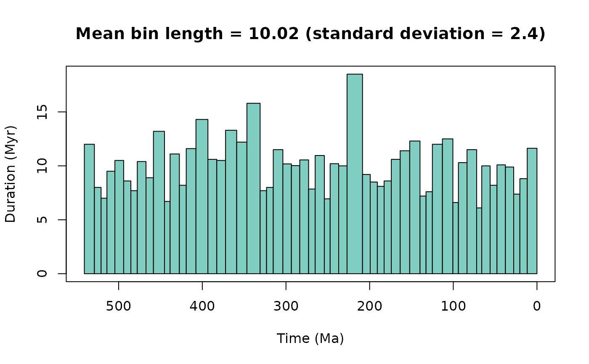
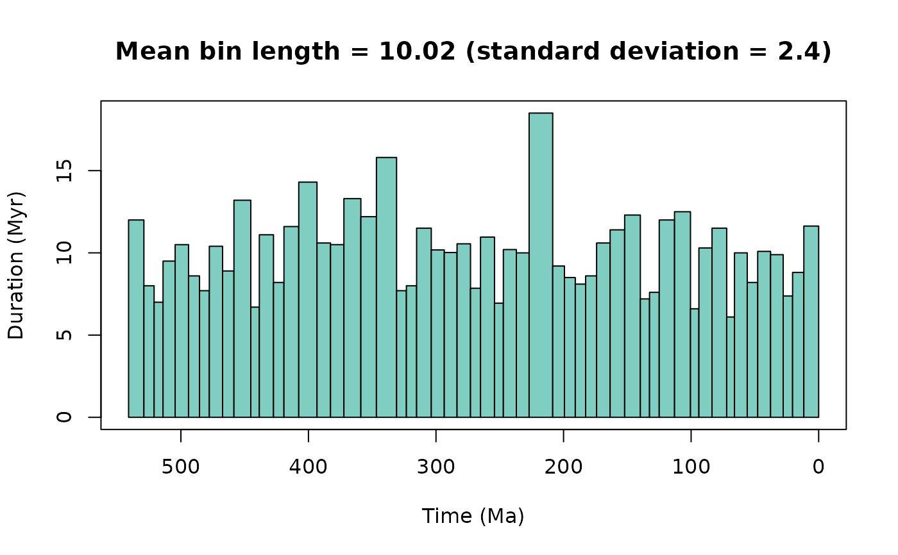

A function to generate time bins for a given study interval. This function is flexible in that either stage-level or higher stratigraphic-level (e.g. period) time bins can be called. In addition, near equal-length time bins can be generated by grouping stages together. For example, for 10 Myr as a target bin size, the function will generate groups of bins that have a mean bin length close to 10 Myr. However, users may also want to consider grouping stages based on other reasoning e.g. availability of outcrop (see Dean et al. 2020).
Usage
time_bins(
interval = "Phanerozoic",
rank = "stage",
size = NULL,
assign = NULL,
scale = "GTS2020",
plot = FALSE
)Arguments
- interval
character or numeric. Interval name available inGTS2020orGTS2012. If a single interval name is provided, this interval is returned. If two interval names are provided, these intervals and those existing between are returned. If a single numeric age is provided, the interval that covers this age is returned. If two numeric ages are provided, the intervals occurring in the range of these ages are returned. Defaults to "Phanerozoic".- rank
character. Which stratigraphic rank is desired? Choose from: "stage", "epoch", "period", "era", and "eon".- size
numeric. If equal-length time bins are desired, specify the length in millions of years (Myr) of the time bins desired.- assign
numeric. A numeric vector of age estimates to use to assign to requested bins. If assign is specified, a numeric vector is returned of the midpoint age of the specified bins. Note this is the simplified approach of assignment inpalaeoverseincluded for data with 'known' point-age estimates. For a wider range of binning methods, seepalaeoverse::bin_time().- scale
character. Specify the desired geological timescale to be used "GTS2020" or "GTS2012". "GTS2020" is the default.- plot
logical. Should a plot of time bins be generated?
Value
A dataframe of time bins for the specified intervals or a
list with a dataframe of time bins and a named numeric
vector (bin number) of binned age estimates (midpoint of specified bins) if assign is specified.
Details
This function uses the Geological Timescale 2020 and the Geological Timescale 2012 (depending on user specification). Additional information on each timescale and source can be accessed via:
Available intervals names are accessible via the interval_name
column in GTS2012 and GTS2020. Data of the Geological Timescale 2020
and 2012 were compiled by Lewis A. Jones (2022-07-02).
References
Dean, C.D., Chiarenza, A.A. and Maidment, S.C., 2020. Formation binning: a new method for increased temporal resolution in regional studies, applied to the Late Cretaceous dinosaur fossil record of North America. Palaeontology, 63(6), 881-901. doi:10.1111/pala.12492 .
Examples
#Using numeric age
ex1 <- time_bins(interval = 10, plot = TRUE)
 #Using numeric age range
ex2 <- time_bins(interval = c(50, 100), plot = TRUE)

#Using a single interval name
ex3 <- time_bins(interval = c("Maastrichtian"), plot = TRUE)
#Using numeric age range
ex2 <- time_bins(interval = c(50, 100), plot = TRUE)

#Using a single interval name
ex3 <- time_bins(interval = c("Maastrichtian"), plot = TRUE)
 #Using a range of intervals and near-equal duration bins
ex4 <- time_bins(interval = c("Fortunian", "Meghalayan"),
size = 10, plot = TRUE)
#> Target equal length time bins was set to 10.02 Myr.
#> Generated time bins have a mean length of 10.82 Myr and a standard deviation of 2.41 Myr.

#Assign bins based on given age estimates
ex5 <- time_bins(interval = c("Fortunian", "Meghalayan"),
assign = c(232, 167, 33))
#Using a range of intervals and near-equal duration bins
ex4 <- time_bins(interval = c("Fortunian", "Meghalayan"),
size = 10, plot = TRUE)
#> Target equal length time bins was set to 10.02 Myr.
#> Generated time bins have a mean length of 10.82 Myr and a standard deviation of 2.41 Myr.

#Assign bins based on given age estimates
ex5 <- time_bins(interval = c("Fortunian", "Meghalayan"),
assign = c(232, 167, 33))